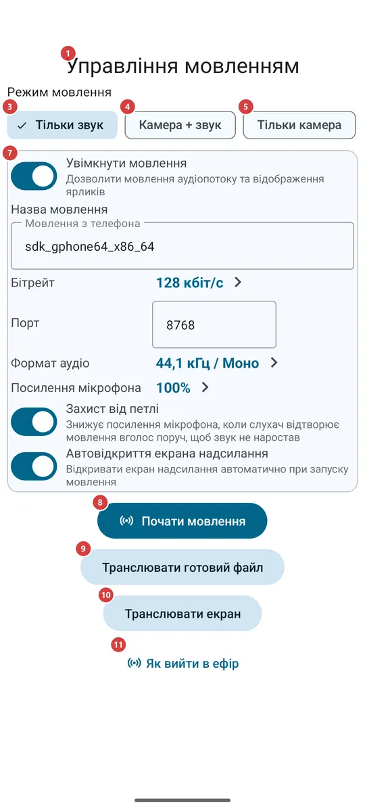
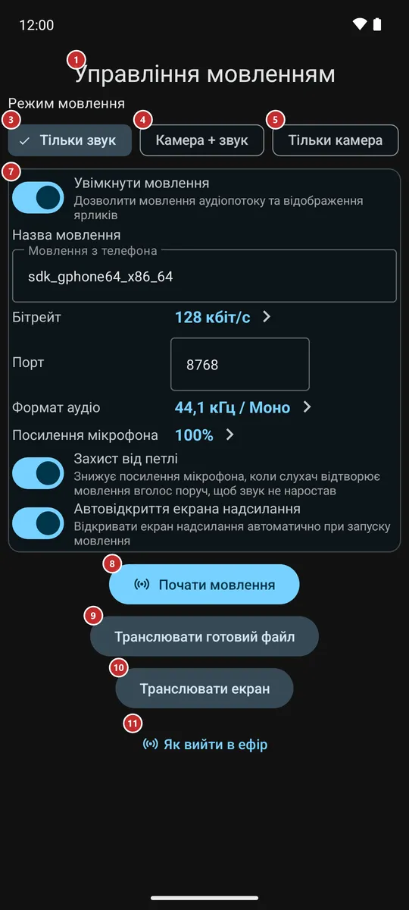

Керування мовленням
Для чого цей екран
Тут ви виходите в ефір зі свого телефона: передаєте мікрофон, камеру, готовий аудіо- чи відеофайл або весь екран іншим людям, а потім даєте їм посилання, QR-код або файл, щоб вони могли дивитися й слухати. Цей самий екран показує, скільки пристроїв підключено, і завершує мовлення.


Порядок дій
- Відкрийте «Мовлення» з меню програм, із панелі програм, плиткою швидких налаштувань або віджетом на домашньому екрані. Якщо його там немає, спершу ввімкніть його в «Налаштуваннях», на вкладці «Медіа», у групі «Мовлення». Екран 1 відкриється з режимом «Тільки звук» і не гасне, поки відкритий.
- Виберіть, що передавати: лише звук 3, камеру зі звуком 4 або одну камеру 5. У режимі з камерою з'являться картинка камери 2 і, якщо на телефоні кілька камер, список камер 6 на вибір.
- За потреби поправте назву, порт і якість звуку в картці налаштувань 7 та натисніть «Почати мовлення» 8. Під час першого запуску застосунок попросить мікрофон, камеру й сповіщення - дозвольте те, що назве повідомлення.
- Щоб передавати не камеру й мікрофон, натисніть «Транслювати готовий файл» 9 і виберіть аудіо- чи відеофайл або «Транслювати екран» 10 і підтвердьте системне запитання про показ екрана.
- Поки ви в ефірі, угорі видно кількість слухачів 12. Вимикайте й вмикайте камеру 14 та мікрофон 15, змінюйте камеру 16, дозволяйте екрану згаснути 17 або підсвічуйте сцену (18, 19). Закінчивши, натисніть «Зупинити мовлення» 22.
- Передайте мовлення глядачам: покажіть QR-код 23, скопіюйте посилання 27, надішліть його 29 або збережіть у файл 28. У захищеного мовлення є ще пароль 25 - повідомте його окремо.
- «Cast на мої пристрої» 21 і «Надіслати на годинник» 20 віддають живе мовлення вашим-таки пристроям, а «Гості» 30 - іншому обліковому запису. Кнопки-довідки (11, 31, 32) відкривають сторінки на сайті.
Елементи
До початку мовлення
1Управління мовленнямНазва екрана, який має два стани: до початку мовлення й ефір.
До початку мовлення на екрані видно, що передавати, та налаштування. В ефірі - живі кнопки й способи поділитися. Блок, який зараз не потрібен, приховано, а не затемнено. Поки екран відкритий, він не гасне сам, доки ви не дозволите йому згаснути (17).
2Картинка камериЩо бачить камера і, в ефірі, що саме передається.
До початку за нею вибирають камеру. Вона з'являється, коли вибрано режим із камерою й камеру дозволено; якщо камеру заборонити, область лишиться порожньою, а екран спитає дозвіл лише один раз за візит. В ефірі тут та картинка, що йде глядачам. Для режиму «Тільки звук» і для мовлення файла чи екрана область прихована: камера в них не працює. Якщо під час мовлення з камерою повернути телефон набік, картинка займе весь екран; торкніться її, щоб повернути кнопки керування поруч, і торкніться ще раз, щоб знову сховати їх.
3Тільки звукПередає лише звук мікрофона.
Режим за замовчуванням. Потрібен лише мікрофон. Вибрати інший режим можна й в ефірі: мовлення тоді відкриється наново в ньому, а глядачі наново відкривають потік за оновленим посиланням чи QR-кодом.
4Камера + звукПередає картинку камери разом зі звуком.
Потрібні камера й мікрофон. В ефірі камеру та мікрофон можна вимикати окремо (14, 15).
5Тільки камераПередає картинку камери без звуку.
Потрібна камера. У деяких редакціях Android просить ще й мікрофон, хоча звук не передається.
6КамераВибирає, яка камера телефона передає картинку.
Одна кнопка на кожну камеру телефона: основну, фронтальну чи зовнішню. Кнопки з'являються в режимі з камерою, коли телефон перелічив свої камери. В ефірі дотик змінює камеру одразу. Вибір запам'ятовується до наступного разу.
7Налаштування мовленняПараметри мовлення поруч із кнопкою запуску.
У картці ті самі параметри, що в групі «Мовлення» налаштувань «Медіа»: чи ввімкнено мовлення, назва, бітрейт, порт, формат аудіо, посилення мікрофона, захист від петлі та чи відкривається цей екран сам під час старту. Зміни зберігаються одразу, а введені назва й порт використовуються під час найближчого запуску. В ефірі картку приховано: налаштування мовлення, що триває, змінювати не можна.
8Почати мовленняВиходить в ефір у вибраному режимі.
Якщо для мовлення бракує дозволу - мікрофона, камери чи сповіщень - система спершу спитає його, а за відмови повідомлення назве, чого бракує. Якщо мовлення не вдалося запустити, наприклад телефон не зміг відкрити порт, повідомлення скаже чому, а екран лишиться як був. В ефірі замість кнопки з'являються живі кнопки й блок «поділитися».
9Транслювати готовий файлПередає готовий аудіо- чи відеофайл замість мікрофона й камери.
Відкриває системний вибір файла для аудіо та відео. Вибраний файл відтворюється як живе мовлення, без мікрофона й камери, тому кнопок для них немає. Файл, що не відкрився або не містить нічого для відтворення, відхиляється з повідомленням. Кнопка видна лише до запуску й лише в редакціях, де мовлення є.
10Транслювати екранПередає те, що показано на екрані телефона.
Система питає підтвердження щоразу. Дозвіл діє на одне мовлення й не зберігається. Якщо відмовитися, нічого не почнеться. Під час мовлення екрана кнопок камери, мікрофона й екрана немає: затемнивши застосунок, ви затемнили б те, що бачать глядачі.
11Як вийти в ефірВідкриває на сайті настанову про те, як вийти в ефір.
Видна до початку мовлення. Сторінка відкривається в браузері, тому потрібен інтернет; у застосунку нічого не змінюється.
Поки ви в ефірі
12Кількість слухачівСкільки пристроїв зараз підключено до вашого мовлення.
Число з'являється лише в ефірі й іде за тим, як люди підключаються та йдуть.
33Рядок сервера обмінуЩо з вашою трансляцією на сервері обміну.
Видно лише в ефірі. Будь-яка трансляція сама йде на ваш вихідний сервер обміну з першої секунди: рядок називає сервер і каже, що трансляція оголошується, уже на сервері або на сервері й роздається через сервер. Якщо щось не так, рядок каже, що сталося і що спробувати; натисніть його, щоб побачити подробиці з кодом. Трансляція в цій мережі при цьому триває. Без сервера обміну рядок каже, що трансляція доступна лише в цій мережі, а натискання відкриває «Мої пристрої», де сервер додається; гостьовий обліковий запис не може транслювати через сервер, і рядок так і каже.
13Попередження про петлю звукуПояснює, чому звук став тихішим: динамік слухача потрапляє у ваш мікрофон.
Червоний рядок з'являється, лише коли «Захист від петлі» притишив мікрофон. Так буває, якщо хтось увімкнув ваше мовлення вголос поруч із мікрофоном і звук почав би наростати до пищання. Відсуньте цей пристрій або зменште на ньому гучність - попередження зникне. Захист - параметр налаштувань мовлення.
14Камера ввімк і вимкВимикає й вмикає картинку, не перериваючи мовлення.
Видна в мовленні з камерою. Напис на кнопці каже, чи ввімкнена камера зараз. За вимкненої камери глядачі бачать чорну картинку, а звук триває.
15Мікрофон ввімк і вимкВимикає й повертає звук.
Видна лише в режимі «Камера + звук». Напис на кнопці каже, чи ввімкнений мікрофон зараз. За вимкненого мікрофона глядачі бачать картинку без звуку.
16Змінити камеруЗмінює камеру, що передає картинку.
Відкриває список усіх камер телефона, а не лише фронтальної й основної; торкніться камери, і перемикання станеться одразу. Вибір запам'ятовується до наступного мовлення.
17Погасити екранДозволяє екрану згаснути, поки мовлення триває.
Там, де камера може працювати у фоні, і в режимі «Тільки звук» кнопка перестає утримувати екран ввімкненим, і дисплей засинає за звичайний час. У редакціях, де камера працює, лише поки застосунок на виду, кнопка називається «Затемнити екран»: вона закриває застосунок чорним екраном із тьмяним годинником, а дисплей лишається ввімкненим. Щоб повернутися, торкніться чорного екрана або натисніть «Назад». Для мовлення файла й екрана кнопки немає.
18ЛіхтарикПідсвічує сцену спалахом камери.
Видна, лише коли в камери в ефірі є спалах і камеру ввімкнено; у фронтальної камери спалаху зазвичай немає. Напис на кнопці каже, чи ввімкнений ліхтарик.
19Яскрава рамкаПідсвічує обличчя яскравою білою рамкою по краях екрана.
Біла рамка по краях екрана з підвищеною яскравістю цього вікна - зручно, коли ви знімаєте себе в темряві. Картинка, кнопки й QR-код під нею лишаються доступними. Підвищується лише яскравість цього вікна, але не налаштування яскравості телефона. Рамка гасне, коли мовлення закінчується або камера зупиняється. Видна в мовленні з камерою телефона.
20Надіслати на годинникВмикає це живе мовлення на підключеному годиннику.
Видна в ефірі, коли ввімкнено застосунок-компаньйон для годинника й телефон його підтримує. Надсилає мовлення на годинник і відкриває його там. Якщо годинник недоступний або не відповідає, повідомлення скаже про це.
21Cast на мої пристроїПросить інші ваші пристрої відтворити це мовлення.
Видна в ефірі, поки мовлення йде через ваш сервер обміну (див. «Мої пристрої»). Кнопка відкриває список «Відтворити на» з вашими пристроями, що вміють це грати, біля кожного позначено «У мережі» або «Не в мережі»; позначте один чи кілька й натисніть «Cast на мої пристрої». Кожен пристрій отримує запит, який може прийняти або відхилити, а повідомлення скаже, котрий грає або чому відмовився.
22Зупинити мовленняЗавершує мовлення.
Слухачі відключаються, камера й мікрофон звільняються, екран повертається до стану до запуску, і картка налаштувань знову на місці. У сповіщенні мовлення є власна кнопка зупинки.
Як поділитися мовленням
23QR-код опису мовленняQR-код, який передає мовлення пристрою поруч.
Інший пристрій сканує його, щоб додати мовлення: у «Трансляціях» відкрийте меню й виберіть «Імпорт трансляції (QR / файл)». Торкніться коду, щоб показати його на весь екран і відсканувати з другого кінця кімнати; щоб повернутися, торкніться ще раз або натисніть «Назад». Якщо режим змінюється в ефірі, код замінюється, зокрема відкритий. Пароль у код ніколи не входить.
24Посилання на мовленняАдреса, за якою віддається ваше мовлення.
Текст можна виділити. Адреса працює для пристроїв, що дістають до вашого телефона мережею. «Копіювати посилання» (27) копіює її, а «Надіслати» (29) передає посилання, яке відкриває мовлення в застосунку, зібране з тих самих даних, що й QR-код.
25Пароль до посиланняПароль захищеного мовлення, який повідомляють окремо від посилання.
Видно, поки мовлення йде через сервер обміну: пароль або «Пароль: немає», якщо ви обрали мовлення без пароля. Ні посилання, ні файл, ні QR-код його не містять, тож людині його повідомляють окремо - голосом чи іншим повідомленням.
26Змінити парольВибирає, як захищене посилання: автоматично, без пароля або власним паролем.
«Автоматичний» створює пароль сам, а «Згенерувати новий» замінює його, якщо пароль потрапив до того, кому його знати не треба. «Без пароля» дає змогу відкрити мовлення кожному, у кого є посилання. «Власний» приймає будь-який набраний вами пароль завдовжки до 64 символів; про короткий застосунок нагадає, що його легко підібрати. Зміна діє одразу: старий пароль перестає відкривати посилання, а пристрої вашого акаунта та гості продовжують дивитися. Той самий вибір є в налаштуваннях мовлення, у рядку «Пароль посилання», і він запам'ятовується для наступного мовлення. Власний пароль зберігається лише на цьому телефоні й не потрапляє до резервної копії.
27Копіювати посиланняКопіює посилання на мовлення.
Повідомлення підтверджує копіювання. Мовлення через сервер обміну копіюється повним посиланням, а не голою адресою, щоб інший пристрій зміг його відкрити й спитав пароль, якщо він є.
28Експорт у файлЗберігає мовлення в невеликий файл, який можна передати.
Система спитає, куди зберегти. Той, хто отримав файл, додає мовлення через «Імпорт трансляції (QR / файл)» у «Трансляціях». Повідомлення скаже, чи збережено файл.
29НадіслатиНадсилає посилання через будь-який вибраний застосунок.
Відкриває системний список застосунків і контактів. Посилання відкриває мовлення у FastMediaSorter на іншому пристрої; якщо застосунку там немає, відкриється сторінка на сайті.
30ГостіНадає живе мовлення іншому обліковому запису вашого сервера обміну.
Видна лише в захищеного мовлення, оголошеного через сервер обміну обліковим записом-учасником. У діалозі «Надати трансляцію гостю» вводять логін гостя (від 3 до 64 літер, цифр, крапок, дефісів чи підкреслень) і натискають «Надати»; нижче перелічено всіх, у кого мовлення є, з відповіддю сервера - очікування, надано чи відмова. «Відкликати» забирає мовлення лише в одного гостя.
31Як це дивитисяВідкриває сторінку, яку можна переслати тому, хто отримує мовлення.
На сторінці пояснено, як дивитися за посиланням, QR-кодом чи файлом. Вона відкривається в браузері, потрібен інтернет.
32Як працює трансляція між пристроямиВідкриває сторінку про те, як працює мовлення між пристроями.
Сторінка на сайті, відкривається в браузері. Потрібен інтернет; у застосунку нічого не змінюється.